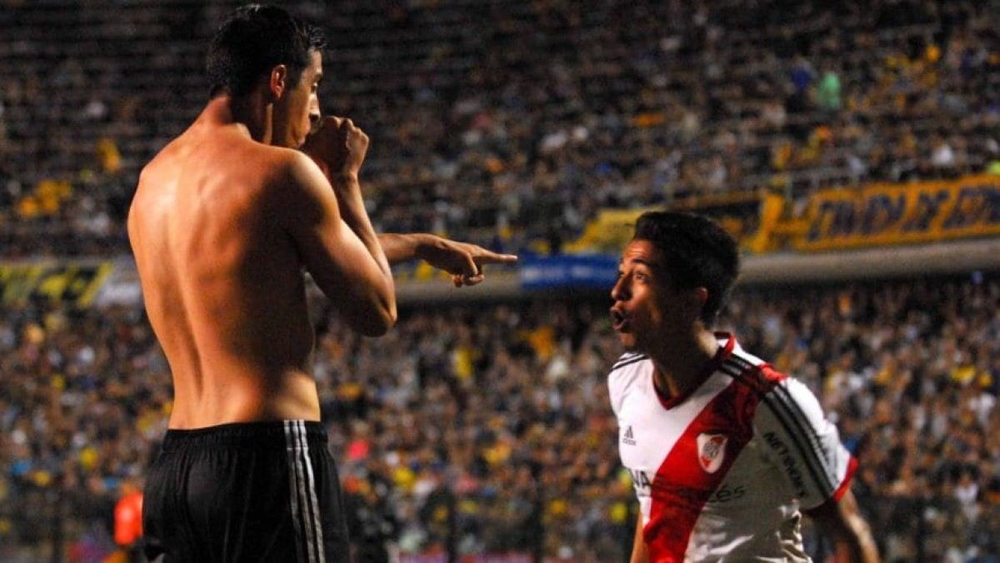

Noticias


Vuelve la dupla central
De cara al partido del sábado ante Defensa y Justicia, la dupla central titular compuesta por Paulo Diaz y David Martinez se perfila como titular. Con Diaz de vuelta en el club luego de su participación en la selección chilena y Martinez recuperado de la lesión, ambos están disponibles para Marcelo

8° aniversario del 'Ramirazo'
Un 30/03/2014 se disputaba el recordado superclásico en la bombonera que ganaría el, por aquel entonces equipo de Ramón, por 2-1 con un cabezazo que pasaría a la historia, no solo porque fue decisivo para el partido, sino también para cortar una sequía de 10 años sin victorias en la Bombonera